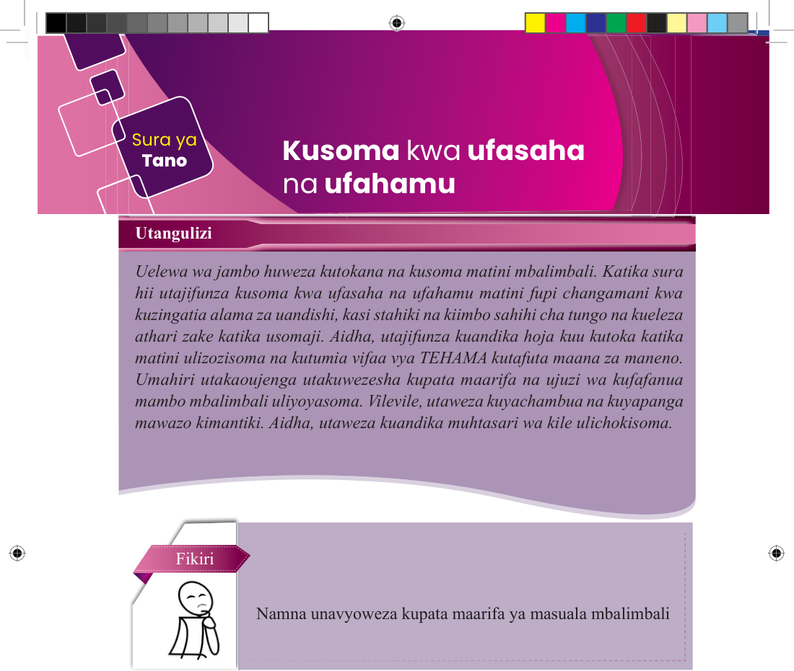

Sura ya Tano
Kusoma kwa ufasaha na ufahamu
Utangulizi
Uelewa wa jambo huweza kutokana na kusoma matini mbalimbali. Katika sura hii utajifunza kusoma kwa ufasaha na ufahamu matini fupi changamani kwa kuzingatia alama za uandishi, kasi stahiki na kiimbo sahihi cha tungo na kueleza athari zake katika usomaji. Aidha, utajifunza kuandika hoja kuu kutoka katika matini ulizosoma na kutumia vifaa vya TEHAMA kutafuta maana za maneno. Umahiri utakaoujenga utakuwezesha kupata maarifa na ujuzi wa kufafanua mambo mbalimbali uliyoyasoma. Vilevile, utaweza kuyachambua na kuyapanga mawazo kimantiki. Aidha, utaweza kuandika muhtasari wa kile ulicho kisoma.
Fikiri

Namna unavyoweza kupata maarifa ya masuala mbalimbali
Kusoma matini fupi changamani kwa kuzingatia alama za uandishi, kasi stahiki na kiimbo
Soma masimulizi yafuatayo, kisha jibu maswali yanayofuata.
Kabula, Mashaka, Maisha na Nyamizi ni marafiki. Wote wanasoma shule ya Sekondari Matapa. Mara nyingi katika kipindi cha kujisomea hupenda kuketi chini ya miti na kujisomea vitabu, majarida na magazeti mbalimbali. Aidha, wanapenda kujisomea na kusimuliana mambo mbalimbali wanayoyasoma katika vitabu, majarida au magazeti hayo. Siku moja, baada ya kumaliza kujisomea, walipata muda wa kusimuliana yale waliyoyasoma. Kila mmoja alikuwa na shauku ya kutaka kusimulia alichokisoma. Walianza kwa kusimuliana hivi: